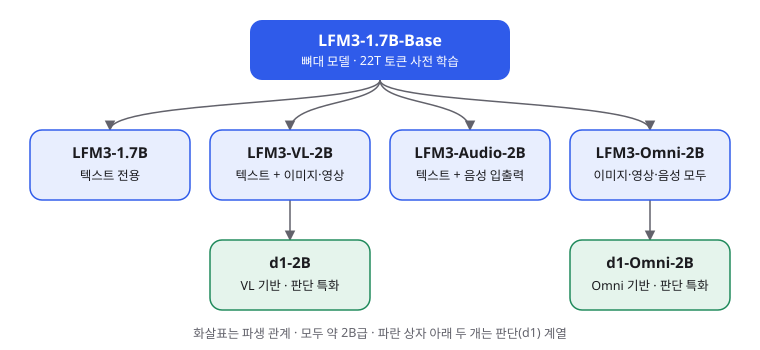
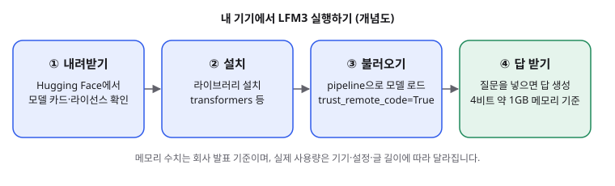

LFM3: 폰과 노트북에서 도는 2B급 오픈 모델 가족, 입문 개발자가 알아야 할 것
- 미국 Liquid AI가 2026년 10월 27일, 파라미터 약 2B급 모델 6종으로 이뤄진 LFM3 가족을 공개했습니다.
- 기반 모델 LFM3-1.7B는 4비트로 줄이면 약 1GB 메모리에 올라가고, 컨텍스트는 256K 토큰이며, 한국어를 포함한 16개 언어를 지원한다고 밝혔습니다.
- 입문 개발자에게는 '내 기기에서 직접 돌려 보고 파인튜닝할 수 있는 출발점'이라는 점이 핵심이고, 코딩이나 복잡한 추론에는 약하다는 한계도 함께 봐야 합니다.
큰 모델이 계속 커지는 흐름 속에서, Liquid AI는 반대쪽 방향의 모델 가족을 내놓았습니다. 약 20억 파라미터(2B)급 모델을 휴대폰과 노트북에서 돌리는 것을 목표로 한다고 밝혔고, 글·이미지·음성을 한 뼈대에서 다루는 모델 여섯 종을 한꺼번에 공개했습니다.
01한눈에 보기
LFM3를 한 문장으로 말하면 '작은 뼈대 하나에 감각 기관을 하나씩 붙인 모델 가족'입니다. 사람으로 치면 같은 두뇌를 공유하면서 눈이나 귀를 필요에 따라 달아 준 것과 비슷합니다. 기반이 되는 LFM3-1.7B가 글을 이해하고, 여기에 이미지(VL), 음성(Audio), 둘 다(Omni) 기능을 붙인 변형이 나옵니다. 파라미터는 모델이 학습으로 익힌 조절 숫자의 개수로, 보통 많을수록 똑똑하지만 그만큼 무겁습니다.

· 양자화(quantization): 숫자를 더 적은 비트로 담아 용량과 메모리를 줄이는 기술. 4비트는 원래보다 훨씬 작게 담는다는 뜻입니다.
· 온디바이스(on-device): 클라우드 서버가 아니라 내 기기에서 직접 실행하는 것.
· 컨텍스트 윈도우: 한 번에 다룰 수 있는 입력과 출력의 합산 길이. 256K 토큰은 긴 보고서 여러 편을 한 번에 넣을 수 있는 길이입니다.
02어떻게 동작하나요
답을 만드는 방식은 다른 대형 언어 모델과 같습니다. 입력 글을 토큰(글자 조각)으로 쪼갠 뒤, 앞에서 읽은 내용을 바탕으로 다음 조각을 하나씩 고릅니다. 다만 LFM3-1.7B는 24개 층을 세 가지 방식으로 나눠 씁니다. 대부분은 주변 몇 토큰만 가볍게 보는 짧은 합성곱(short convolution) 층이고, 가까운 범위만 보는 어텐션 층이 5개, 전체 문맥을 보는 글로벌 어텐션 층이 6개 섞여 있습니다. 전부를 무겁게 보지 않아 긴 글을 다룰 때 메모리 부담을 줄이려는 설계로 읽힙니다. 비유하자면 정독하는 사람 몇 명과 훑어보는 사람 여러 명을 섞어 쓰는 팀과 비슷합니다.
메모리 수치도 회사가 공개했습니다. 128K 컨텍스트를 채울 때 이미 읽은 내용을 기억해 두는 KV 캐시가 1.6GB이고, 같은 조건의 Qwen3.5-4B는 4.3GB라고 비교했습니다. 이 수치는 회사가 직접 낸 것입니다.

03왜 지금 화제인가요
발표는 10월 27일이었고, 이후 하루 이틀 사이 여러 기술 매체와 블로그가 '여섯 개 모델을 한 번에 공개했다'는 점을 중심으로 다뤘습니다. 소개 글들은 공통적으로 온디바이스에서 쓸 수 있는 멀티모달 소형 모델이라는 점과, 특정 업무에 맞게 파인튜닝하는 출발점으로 쓸 수 있다는 점을 강조했습니다. 이번 조사에서는 Reddit이나 Hacker News의 토론 글을 작성 시각까지 확인하지 못해 반응으로 인용하지 않았습니다.
04관련 나라·기업
| 구분 | 이름 | 어떤 관련이 있나 |
|---|---|---|
| 기업 | Liquid AI | LFM3 개발사. 보스턴에 본사를 둔 MIT 출신 회사로 알려져 있습니다 |
| 기업 | Hugging Face | 모델 가중치와 모델 카드를 배포하는 플랫폼. 공식 소개 글도 이곳에 올라왔습니다 |
| 기업 | Alibaba | 벤치마크 비교 대상인 Qwen3.5 계열의 개발사 |
| 기업 | 비교 대상인 Gemma 4 계열의 개발사 | |
| 나라 | 미국 | Liquid AI의 본사 소재지 |
| 나라 | 중국 | 비교 대상 모델(Qwen, MiniCPM 등)의 개발국 |
05기존 방식과 무엇이 다른가
| 비교 항목 | 기존 클라우드 모델 호출 | LFM3-1.7B 직접 실행 |
|---|---|---|
| 실행 장소 | 제공사 서버 | 내 PC나 휴대폰 (4비트 기준 약 1GB) |
| 비용 구조 | 토큰마다 API 요금 | API 요금 없음 (전기와 기기 자원을 사용) |
| 컨텍스트 | 모델마다 다름 | 256K 토큰 (입력과 출력 합계) |
| 한국어 | 모델마다 다름 | 모델 카드의 지원 언어 16개에 한국어 포함 |
| 강점 | 복잡한 추론과 코딩 | 작고 특정한 업무, 기기 안에서 빠른 응답 (회사 주장) |
06직접 해 보기
오늘 해 볼 첫 걸음은 공식 모델 카드를 열어 보고, 파이썬 환경에서 짧은 대화 한 번을 실행해 보는 것입니다. 1단계는 Hugging Face에서 LiquidAI/LFM3-1.7B 페이지를 열어 라이선스와 지원 언어를 읽는 일입니다. 2단계는 아래 명령으로 라이브러리를 설치하는 것입니다.
pip install -U transformers accelerate3단계는 모델 카드의 빠른 시작 예시를 그대로 실행하는 것입니다. 첫 실행에는 모델 파일을 내려받느라 시간이 걸립니다.
from transformers import pipeline
generator = pipeline(
"text-generation",
model="LiquidAI/LFM3-1.7B",
trust_remote_code=True,
)
messages = [{"role": "user", "content": "What is C. elegans?"}]
output = generator(
messages,
do_sample=True,
temperature=0.1,
top_k=50,
repetition_penalty=1.1,
max_new_tokens=2048,
)
print(output[0]["generated_text"][-1]["content"])서버처럼 띄워 보고 싶다면 모델 카드에 적힌 vllm serve "LiquidAI/LFM3-1.7B" 명령을 쓸 수 있습니다. 카드는 llama.cpp, Ollama, LM Studio용 GGUF 변환본도 안내하지만, 이 글에서는 그 도구들의 실행 명령을 공식 문서로 확인하지 못해 적지 않았습니다.
07주의할 점과 한계
- 벤치마크 대부분이 회사가 직접 낸 수치입니다. 같은 자료에서도 LFM3-1.7B의 GPQA Diamond 점수는 63.37로, Qwen3.5-9B의 80.40보다 낮습니다(eesel 정리). SWE-bench Verified 역시 43.40 대 51.20으로 뒤처집니다.
- 모델 카드는 이 모델을 agentic 코딩이나 복잡한 다단계 추론에 권하지 않는다고 적었습니다. 지식이 필요한 질문에는 검색 기능을 붙이라고도 안내합니다.
- 라이선스는 LFM Open License v1.0입니다. 2차 보도에 따르면 연매출 1,000만 달러 이하 기업은 상업적으로 무료로 쓸 수 있고, 그 이상은 Liquid AI와 별도 계약이 필요합니다. 이 조건은 원문에서 직접 확인하세요. OSI 기준의 오픈소스 라이선스는 아니라는 설명도 있습니다.
- 사고(thinking) 기능이 기본으로 켜져 있고, 끄면 결과가 들쭉날쭉할 수 있다고 모델 카드가 밝혔습니다.
- 보도마다 파라미터 수가 조금씩 다르게 적혀 있습니다. 모델 카드로 정확히 확인된 것은 LFM3-1.7B의 1.73B뿐입니다.
- 독립 평가는 발표 직후 기준으로 아직 충분하지 않습니다. 메모리 수치와 속도 수치는 회사 환경에서 측정된 값이라, 내 기기에서는 다를 수 있습니다.
08정리
LFM3가 흥미로운 이유는 성능 1등을 노려서가 아니라, 작은 모델을 얼마나 실용적으로 만들 수 있는지 보여 주는 방향에 있기 때문입니다. 1.7B 모델이 4비트로 약 1GB에 들어가고, 음성과 이미지 기능까지 같은 가족으로 묶인다는 점은 휴대폰이나 노트북 안에서 돌아가는 앱을 떠올리게 합니다.
입문 개발자라면 이 모델로 내 기기에서 모델을 돌려 보고, 짧은 질문을 던져 보고, 필요하면 작은 데이터로 파인튜닝까지 해 보는 경험을 쌓기 좋습니다. 다만 코딩 에이전트나 어려운 추론을 맡기기 전에는 반드시 자신의 과제로 직접 테스트해 보세요. 발표 수치보다 내 데이터에서 나온 결과가 훨씬 중요합니다.
09참고한 글
- Introducing LFM3: Every Modality for Specialized Intelligence Liquid AI 공식 블로그 · 2026.10.27
- LiquidAI/LFM3-1.7B 모델 카드 Hugging Face · 공식 모델 카드 (날짜 표기 없음)
- LiquidAI/LFM3-1.7B-Base 모델 카드 Hugging Face · 공식 모델 카드 (날짜 표기 없음)
- Liquid AI releases six LFM3 models for on-device specialization RuntimeWire · 2026.10.27
- LFM3: Liquid AI's 2B model family, benchmarks, speed, and the catch eesel · 2026.10.28
- 온디바이스 멀티모달의 한계를 넘는 Liquid AI LFM3: 1GB 용량에 담긴 12B급 성능의 비밀 tilnote · 2026.10.28
- What Is Liquid AI LFM3? Six Open-Weight 2B Models Explained andrew.ooo · 2026.10.28
- Liquid AI lança a família LFM3 (포르투갈어 기사) Horadecodar · 2026.10.28
- Liquid AI LFM3 릴리스 기록 nocode.mba 릴리스 트래커 · 2026.10.27